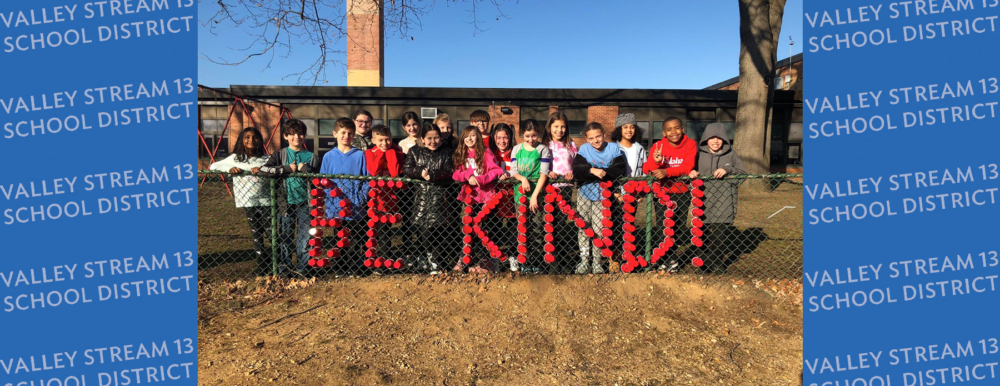
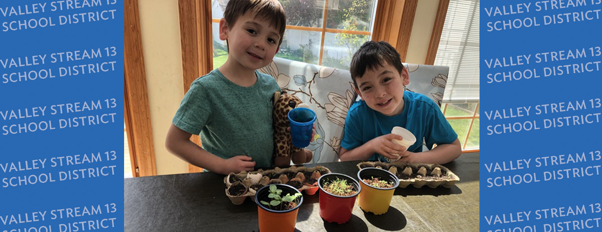
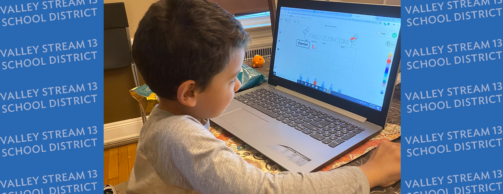
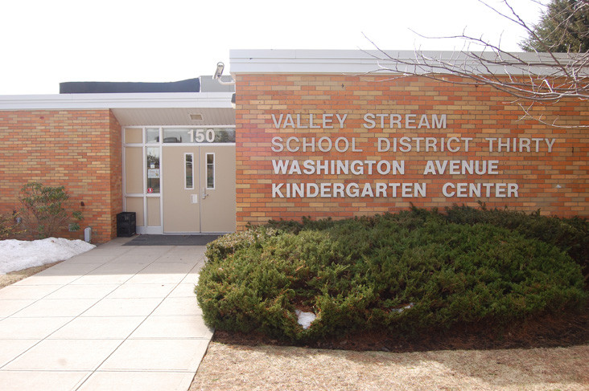
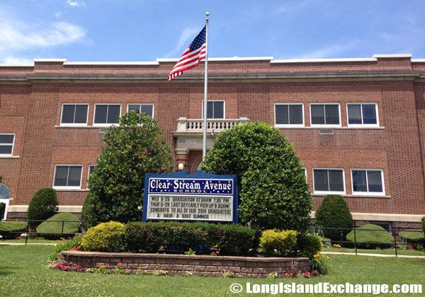
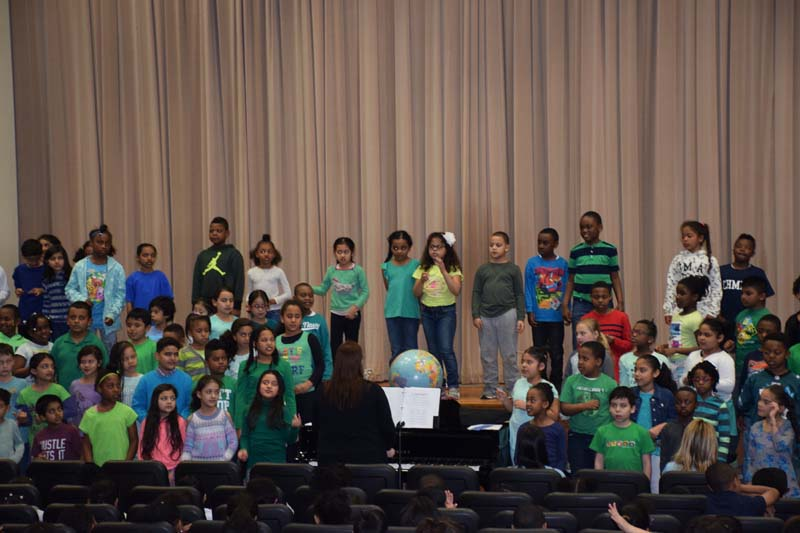

Schools in Valley Stream
Valley Stream School District 13
Students in Valley Stream UFSD Thirteen represent the diverse community in which they live. The socioeconomic status of the community is at the middle of the spectrum and the community places a high value on maintaining an excellent educational system. Valley Stream’s mission statement reads: Through the efforts of home, school, and community, the schools of Valley Stream UFSD Thirteen enable students to become independent, responsible, self-confident, and motivated towards lifelong learning. To this end, the school district offers its entire community of learners a varied and challenging curriculum in a nurturing environment that is conducive to teaching and learning. Children are expected to consider important ideas, to master basic skills, to develop keen problem-solving skills, to develop social responsibility, and to set high personal goals. Children become literate in the traditional sense, as well as in the areas of technology, science, and mathematics.
  Valley Stream School District 30
The District encompasses an area of approximately two square miles and has a population of about 15,500 residents. A portion of the incorporated Village of Valley Stream is located within the boundaries of the School District. Educational opportunities abound. Nearby colleges and universities include Adelphi, Hofstra, St. John's, C.W. Post, New York Institute of Technology, State University of New York at Old Westbury, State University of New York at Farmingdale; and Nassau Community College. Long Island is a technology and science research hub, with thriving and expanding industries contributing to a growing economy. More than 100 professional practices are located in Valley Stream. Numerous stores and boutiques are a short distance away from our neighborhoods. The famous Green Acres Shopping Mall is located just south of the main thoroughfare.
  